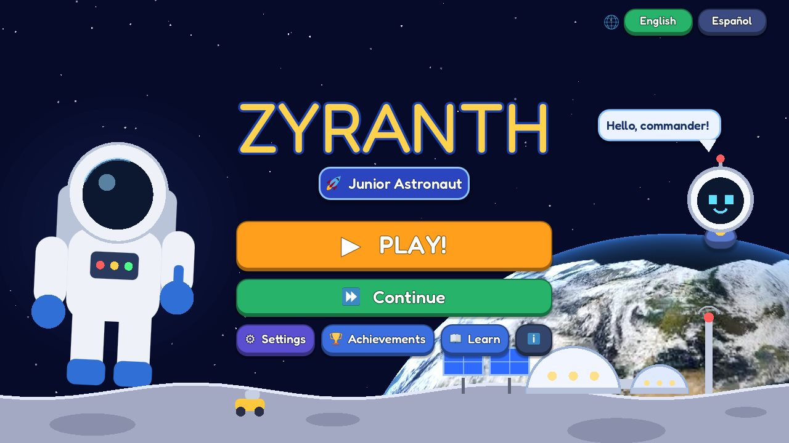

ZYRANTH
Run a base next to the Moon. Four systems, one budget, no perfect answer. An educational space-survival game for kids 7–12, built on real NASA and NOAA open data.

Space survival is all about trade-offs
On a real mission every improvement costs something else. ZYRANTH lets kids feel that: each mission is an engineering dilemma — something to protect, something to sacrifice.
No perfect answer
Every choice shows what you gain ▲ and what it costs ▼ before you confirm. Kids compare, decide and see the consequences — and losing is always a positive, “here’s what to improve” moment.
Made for 7–12 year olds
Big icons instead of numbers, three-state meters (✓ ⚠ ✗ — never colour alone), a rounded font, a friendly robot guide and a step-by-step tutorial for every mission.
Real data, honest labels
Solar flares, geomagnetic storms and satellite imagery come from NASA and NOAA. Everything is labeled as real, historical, reference or simulation — we never invent data.
Four systems, one budget
They are connected: improving one always takes energy, materials or crew time from another.
Life support
Oxygen, CO₂ and water. Uses energy and needs maintenance.
Protection
Shielding and a radiation shelter. Uses materials and hours.
Energy
Solar panels (day only), batteries and a backup reserve.
Food
A greenhouse that also helps with air and water. Uses LED light and care.
They all compete for ⚡ energy · 🧱 materials · ⏱ crew hours
Six missions, six dilemmas
Missions unlock in a chain. Each has its own rules, risks and tutorial.
Lunar Shelter: The Awakening
Four systems, one budget. The tutorial mission.
Storm on the Horizon
Crops or shield: sacrifice the plants’ energy to protect the crew.
Blackout at the Polar Cap
Almost no sunlight. Which subsystem do we switch off?
The Lava Tube Harvest
Light or energy: alternate high light and darkness to grow food.
Orbital Shadow Effect
A very long night: heating or sending data to Earth?
Thermal Shield Anomaly
A crack opens before a solar storm: seal it or look after the air?
Mars base
The next frontier: the same four systems with brand-new challenges.
Real NASA & NOAA data
Every piece of information shows where it comes from.
| Source | Label | What it does in the game |
|---|---|---|
| NASA DONKI (CCMC) Flares, CMEs, geomagnetic storms, SEP, WSA-Enlil | REAL DATA HISTORICAL DATA | The latest strong solar event sets the alert level of the solar-storm turn (a simulation parameter). |
| NASA GIBS MODIS & VIIRS imagery, Black Marble | REAL DATA HISTORICAL DATA | The real Earth in the sky and in “Learn more”. |
| NASA LRO · Moon Trek Global WAC mosaic of the Moon | HISTORICAL DATA | The real Moon behind the base. |
| NASA Earthdata CMR ISS lightning sensor (LIS) | HISTORICAL DATA | Context in the Space Data Center. |
| NOAA SWPC Planetary Kp index, space-weather scales | REAL DATA | Cross-check of DONKI’s geomagnetic activity. |
| NASA ECLSS · Radiation Protection · Moon Base Systems · Veggie | NASA REFERENCE | Explain what each building does, with a link to the source. |
| Game numbers (SimConfig) | SIMULATION PARAMETER | Energy, materials, hours and exposure are game values — not measurements. |
We never present a solar-event class as a real radiation dose. Without internet the game keeps working from the last saved copy; without a copy it uses a clearly labeled educational simulation.
See it in action
Tap a building, spend your budget, make a decision, survive the alerts.
Presentation
Our project in a few minutes.
Team
Credits & attributions
Data: NASA / GSFC / CCMC (DONKI), NASA EOSDIS GIBS, NASA LRO · Moon Trek, NASA EOSDIS / GHRC DAAC, NOAA SWPC. Fonts: Fredoka (SIL OFL 1.1), Twemoji · Mozilla COLR (CC-BY 4.0), DejaVu Sans (Bitstream Vera licence). Built with Godot 4.7.
This project is not an official NASA product and is not endorsed by NASA.